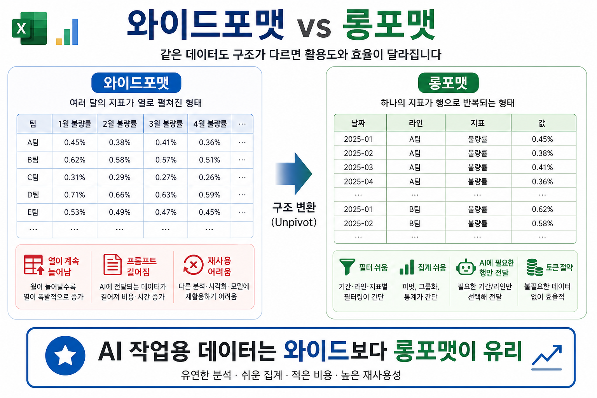
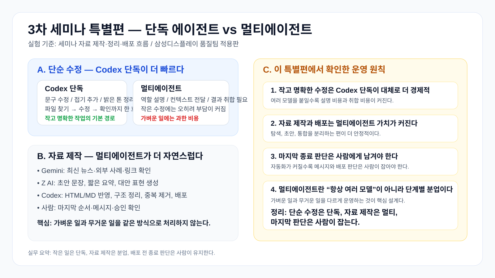

이 페이지는 이렇게 보면 된다
메인페이지는 한 번에 다 담으려고 하기보다, 문제 인식 → 구조 설계 → 실사례 → 실행안 순서로 읽으면 자연스럽다. 세부 가이드는 필요한 사람만 뒤로 내려가면 된다.
1. 먼저 볼 흐름
- 오늘 사건 — 왜 이 세미나가 필요한가
- 토큰 누수 — 어디서 비용이 새는가
- 실전 조치 — 오늘 실제로 아낀 방법(MCP·Skill·RTK)
- 운영 원칙 — 개인이 당장 지킬 5원칙
- 조직 설계 — 어떤 모델을 어디에 쓸 것인가
- 실사례 — 실제로 돌려보니 뭐가 쌌는가
- 메모리·루프 — 기억은 파일로, 루프엔 브레이크
- 실행안 — 품질팀은 무엇부터 할 것인가
2. 이 페이지의 결론
핵심 메시지는 단순하다. 큰 모델은 판단에만, 작은 모델은 반복에, 결정론적 일은 스크립트로. 그리고 실제 실험 결과까지 보면 “싼 초안은 Z AI, 최신 탐색은 Gemini, 비싼 판단은 Codex”가 현재 가장 실용적이다.
메인에 남기고, 상세는 접는다
핸드폰 서버, 서버 노트북, 배포 실습, DB 가이드는 중요하지만 모두 메인에 길게 펼치면 흐름이 깨진다. 메인에는 판단 기준과 운영 원칙을 남기고, 상세 절차는 확장자료/가이드로 넘기는 편이 낫다.
부록 성격의 자료 한 번에 보기
핸드폰 서버는 개념 실험용, 서버 노트북은 부서 내부 공유용, 정식 팀 서버는 장기 운영용으로 보는 것이 자연스럽다. 메인 세미나에서는 이 세 단계를 “운영 성숙도” 관점으로만 이해하고, 실제 설치 절차는 각 가이드 문서로 넘긴다.
index3.html 같은 구버전/중복 페이지는 앞으로 메인페이지 기준으로 정리해 혼선을 줄이는 것이 좋다.
오늘 사건이 보여준 것
“회사 전체 토큰 부족으로 전면 금지”는 단순한 예산 이슈가 아니다. 이미 우리 업무 일부가 AI를 전제로 재구성되었다는 뜻이다. 그래서 차단 순간에는 생산성 저하만 오는 게 아니라, 금단감·불안·작업 기억 부담 급증까지 같이 온다.
토큰이 새는 5가지 구멍
대부분의 토큰 낭비는 모델 성능 문제가 아니라, 우리가 AI를 쓰는 방식의 설계 미숙에서 나온다.
1. 과도한 컨텍스트
전체 문서, 전체 로그, 전체 대화를 매번 다시 넣는다. 사실 필요한 조각만 주면 되는데, 늘 모든 맥락을 실어 나른다.
2. 모호한 목표
끝나는 조건이 없으니 AI가 재시도와 우회를 반복한다. 설명은 많은데, 정작 완료 기준은 부족한 상태다.
3. 결정론적 작업의 LLM화
리네임, 포맷 정리, 템플릿 채우기까지 모델에 맡긴다. 이런 일은 원래 스크립트가 더 싸고 더 정확하다.
4. 브레이크 없는 루프
같은 실패를 반복하면서도 계속 돈다. 파일은 안 바뀌는데 토큰만 타들어간다.
5. 조직 예산 정책 부재
중요 업무와 덜 중요한 실험이 같은 풀에서 경쟁한다. 결국 몇 명의 헤비 유저가 공용 한도를 먼저 써버린다.
6. 안 쓰는 MCP 커넥터
Figma·Notion·Canva 같은 커넥터는 한 번도 안 써도 매 세션 '도구 설명서'가 통째로 실려 시작하자마자 컨텍스트를 수만 토큰 선점한다. Codex도 켜둔 mcp_servers만큼 그대로 비용이다.
결론
토큰 부족은 단순히 “사용량이 많아서”가 아니라, 어디에 어떤 모델을 어떻게 쓰는지에 대한 정책이 없어서 생긴다.
실전 — 오늘 우리가 실제로 토큰을 아낀 5가지
이건 이론이 아니라 오늘 토큰 부족을 직접 겪고 바로 적용한 조치다. 순서가 중요하다. 프롬프트를 줄이기 전에, 매 세션 자동으로 실리는 것부터 줄여야 한다.
1. 안 쓰는 MCP 커넥터부터 끈다 (효과 최대)
Figma·Canva·Notion·Asana 같은 커넥터는 한 번도 안 써도 매 세션 '도구 설명서(스키마)'가 통째로 실린다. 대화 한 마디 하기 전에 컨텍스트 절반이 차는 주범이다.
- 실제 쓰는 1~2개만 남기고 전부 OFF
- Claude=앱 커넥터 설정 / Codex=
mcp_servers에서 제거 - MCP가 나쁜 게 아니라 “안 쓰는데 켜둔 것”이 문제
2. 명령 출력은 자동 압축 (RTK 훅)
git·grep·cat·ls 결과를 통째로 모델에 넣지 말고, RTK(Rust Token Killer)가 걸러 60~90% 압축해 넘긴다. 훅으로 걸어두면 자동 적용된다.
rtk init -g # 훅 설치 rtk gain # 절약률 확인
3. 기억은 '짧은 파일'로
대화에 맥락을 쌓지 말고 파일로 빼되, 그 파일도 계속 짧게 유지해야 한다. 세션 시작마다 통째로 로딩되기 때문이다.
now.md는 '당장 할 일'만, 역사는diary·아카이브로- 오늘 실측: now 8.3K→2.4K, diary 32K→13.7K로 축소
4. 스킬·명령은 필요할 때만 로드
모든 설명·규칙을 항상 프롬프트에 넣지 말고, 트리거될 때만 불러오는 스킬(Skill)/슬래시 명령으로 분리한다. 상시 컨텍스트가 줄어든다.
- “항상 붙는 설명” → “필요할 때만 로드”로 전환
- 세션 기본 무게가 가벼워져 오래 버틴다
5. 산출물은 영구 경로에 저장
에이전트가 만든 파일을 임시 작업폴더에 두면 다음 세션에 사라져, 같은 걸 다시 만들며 토큰을 또 태운다. 결과는 고정 경로에 저장한다.
핵심 순서
① 자동으로 실리는 것(커넥터·메모리·상시 도구) → ② 명령 출력 압축 → ③ 그다음 프롬프트 순으로 줄여라. 대부분은 ③만 신경 쓰다 ①에서 새는 걸 놓친다.
토큰을 아끼는 운영 원칙
이 원칙만 지켜도 사용량은 줄고, 동시에 결과 품질은 오히려 더 안정된다.
원칙 1. 큰 모델은 판단에만
- 문제 정의
- 설계 선택
- 예외 판단
- 최종 검토
비싼 Claude를 모든 타이핑과 반복 수정까지 맡기기보다, 판단·설계·최종 검토에만 집중시키는 편이 토큰 효율이 좋다.
원칙 2. 작은 모델은 반복에
- 문서 초안
- 요약
- 질문응답
- 가벼운 변환
빠른 Codex류 모델은 코드 초안, 반복 실행, 타이핑, 병렬 시도 같은 손발 역할에 붙이는 것이 가장 싸고 빠르다.
원칙 3. 결정론적 일은 스크립트로
보고서 포맷, 파일 정리, 정규화, 배치 리포트, 템플릿 채우기는 굳이 LLM이 할 일이 아니다.
원칙 4. 검증 없는 루프 금지
종료 조건, 반복 상한, 예산 상한, 실패 차단기 없이 자동 루프를 돌리면 토큰을 태우면서 틀린다.
원칙 5. 엑셀은 와이드보다 롱포맷
AI에게 표를 읽히거나 가공시킬 때는 열이 끝없이 늘어나는 와이드포맷보다, 항목·날짜·값으로 세운 롱포맷이 훨씬 효율적이다.

- 와이드포맷: 월별 컬럼이 계속 늘어나 프롬프트가 길어진다
- 롱포맷:
date / line / item / value구조로 재사용이 쉽다 - 필터·집계·피벗은 코드나 엑셀에서 하고, AI에는 필요한 행만 준다
실무 예 보기
예를 들어 2026-01 불량률, 2026-02 불량률, 2026-03 불량률…처럼 열이 늘어나는 표보다, 날짜 | 공정 | 지표 | 값 형태로 세워두면 AI가 “3개월 추세 요약”, “라인별 비교”, “이상치 탐지”를 훨씬 적은 토큰으로 처리할 수 있다.
조직은 모델을 계층화해서 써야 한다
모든 사람이 항상 최고급 모델을 쓰는 구조는 오래 못 간다. 결국 모델도 역할 분담이 필요하다.
Tier A — 고급 판단 모델
- 복잡한 디버깅
- 아키텍처 설계
- 임원 보고 핵심 정리
- 연구 아이디어 발굴
Tier B — 실무 기본 모델
- 문서 초안
- Q&A
- 기본 설명
- 짧은 요약
Tier C — 스크립트·규칙·비LLM
- 포맷팅
- 리네임
- 정해진 추출
- 정기 리포트
핵심 메시지
“무조건 좋은 모델”이 아니라, 작업 특성에 맞는 가장 싼 실행 경로를 찾는 조직이 결국 이긴다.
실무 전략 — 퍼스트 코덱스, 라스트 클로드
처음 손대는 초안·타이핑·반복 실행은 Codex에 맡기고, 방향 결정·예외 판단·최종 품질 보증은 Claude가 맡는 구조가 토큰과 속도를 동시에 잡기 쉽다.
- Codex: 코드 초안, 빠른 수정, 병렬 시도
- Claude: 아키텍처 판단, 통합, 최종 설명
- 결론: “최고 모델 하나”보다 역할 분담된 조합이 더 오래 간다
특별편 — Codex 단독 vs 멀티에이전트 실사례
이번 특별편은 말로만 “멀티에이전트가 좋다”를 주장하지 않고, 세미나 자료 제작·정리·배포 과정을 실사례로 보여준다. 핵심은 단순하다. 단순 수정은 단독 에이전트, 자료 수집·정리·배포는 멀티에이전트, 그리고 마지막에는 사람이 구조와 메시지를 확인하는 것이다.

실험 1 — 단순 수정은 Codex 단독
- 문구 한두 줄 수정, 접기 추가, 색상/배치 미세 조정은 Codex 단독이 가장 빠르다
- 파일 위치 파악 → 수정 → 미리보기 확인까지 한 흐름으로 끝내기 좋다
- 이 단계에서 멀티에이전트를 붙이면 오히려 설명 비용과 컨텍스트 비용이 커진다
결론: 작고 명확한 작업은 단독 에이전트가 더 경제적이다. 역할이 뚜렷하지 않은데 여러 모델을 붙이면 오히려 토큰만 늘어난다.
실험 2 — 자료 제작은 멀티에이전트
- Gemini: 최신 뉴스·사례·외부 참고자료를 좁게 수집
- Z AI: 초안 문장, 요약, 비교 문안을 짧고 싸게 생성
- Codex: HTML/MD 반영, 구조 정리, 중복 제거, 최종 배포를 담당
여러 자료를 모으고, 설명 톤을 맞추고, 실제 페이지에 반영해 배포해야 할 때는 탐색·초안·통합을 분리하는 멀티에이전트가 더 자연스럽다.
실무 운영형 멀티에이전트 예
- Gemini가 최신 사례와 바깥 변화를 먼저 긁어온다
- Z AI가 초안 문장과 짧은 요약 후보를 만든다
- Codex가 실제 HTML/MD를 수정하고 구조를 정리한다
- 마지막에 사람이 순서, 메시지, 회사 설명 톤을 확인하고 배포한다
왜 이 특별편이 중요한가
이 사례의 포인트는 “항상 멀티에이전트”가 아니라, 같은 작업 안에서도 단계별로 방식이 달라져야 한다는 것이다. 단순 수정은 단독이 낫고, 조사·정리·배포는 분업이 더 자연스럽다.
즉 핵심은 모델 수를 늘리는 것이 아니라, 어떤 단계에 어떤 모델을 넣을지 설계하는 감각이다.
실제 사용 규칙 요약 보기
- Codex: 파일 수정, 구조 정리, 최종 반영, 배포
- Gemini: 최신 자료 탐색, 링크 확인, 외부 사례 수집
- Z AI: 짧은 초안, 설명 문구, 대안 표현 생성
- 사람: 종료 판단, 핵심 메시지 확정, 대외 배포 승인
즉 이 특별편의 대표 예시는 “단순 수정은 단독, 자료 제작은 멀티, 마지막 판단은 사람”이다. 이게 바로 한 작업을 단계별로 다르게 설계한 멀티에이전트 운영이다.
메모리와 루프를 잘 설계해야 토큰이 안 샌다
대화를 길게 쌓기보다, 기억은 파일로 외부화하고 루프에는 브레이크를 다는 편이 훨씬 싸고 안정적이다.
권장 메모리 구조
SESSION_START.md — 시작용 초경량 맥락
실제 예시 보기
# Session Start - 사용자: 삼성디스플레이 품질팀 - 현재 핵심 주제: AI 에이전트, 토큰 절약, 품질팀 적용 - 말투: 짧고 직접적으로 - 바로 알아야 할 것: 1. 3차 세미나 메인 = token-frugal-agent-playbook-2026.html 2. 확장자료 = claude-masterclass-2026.html 3. 오늘 우선순위 = 품질팀 기준으로 세미나 자료 정리
now.md — 오늘 할 일과 현재 리스크
실제 예시 보기
# Now ## 오늘 할 일 1. 3차 세미나 메인 페이지를 밝은 톤 기준으로 정리 2. 최신 AI 뉴스(Fable 5, Sonnet 5, GPT-5.6 Sol) 반영 3. 품질팀 기준 문구 통일 ## 현재 리스크 - 3차 세미나 페이지가 여러 개라 사용자가 헷갈릴 수 있음 - index3.html이 구버전으로 남아 있음 - 최신 뉴스 출처가 흐리면 신뢰도 저하
diary.md — 날짜별 작업 일지
실제 예시 보기
## 2026-07-08 - 한 일: - 3차 세미나 메인 구조를 token-frugal 페이지 기준으로 재편 - index.html을 진입 페이지로 단순화 - claude-masterclass 페이지를 확장자료로 라벨링 - 배운 것: - 세미나 페이지가 여러 개면 역할 라벨이 없을 때 바로 혼선이 생김 - 품질팀 기준 문구 통일이 중요함 - 다음 할 일: - index3.html 퇴역 여부 결정 - 메인 페이지에 최신 뉴스/실습 연결 강화
records/ — 결과·채점·배포 로그
실제 예시 보기
records/ ├── 2026-07-08-seminar-update.md ├── 2026-07-08-kospi-score.json ├── deploy-log-2026-07-08.txt └── screenshots/ # 기록 예시 - 배포 커밋: c39ddda - 메인 URL: /ai-seminar-2026/ - 실제 메인 본편: token-frugal-agent-playbook-2026.html - 테스트: 링크/구조/리다이렉트 확인 완료
루프에 반드시 들어가야 할 것
종료 조건
실시예 보기
예시 1) 보고서 루프 - 종료 조건: - 1페이지 요약 완료 - 핵심 메시지 3개 포함 - 오탈자 검사 완료 예시 2) 코드 수정 루프 - 종료 조건: - 테스트 8개 모두 통과 - lint 에러 0개 - 변경 파일 수 5개 이하
반복 상한
실시예 보기
예시 1) 디버깅 루프 - 최대 4회까지만 수정·재실행 - 4회 안에 해결 못 하면 원인 요약 후 중단 예시 2) 초안 개선 루프 - 문체 수정은 최대 3번 반복 - 그 이후엔 대안 2개만 제시하고 사람 판단 대기
예산 상한
실시예 보기
예시 1) 리서치 루프 - 최대 150k 토큰 - 20분 이내 - 초과 시 "현재까지 수집한 핵심만 요약"으로 종료 예시 2) 에이전트 코딩 작업 - 하루 예산: $8 - 모델별 한도: - 고급 모델: $5 - 일반 모델: $3 - 초과 시 스크립트/일반 모델 모드로 자동 다운그레이드
같은 실패 반복 시 차단기
실시예 보기
예시 1) 테스트 실패 차단기 - 같은 테스트가 2회 연속 동일 에러면 중단 - 로그 요약 + 원인 추정 + 사람 확인 요청 예시 2) 배포 실패 차단기 - 같은 배포 단계에서 2회 연속 실패하면 자동 중지 - 환경변수/권한/네트워크 점검 체크리스트만 출력 예시 3) 문서 생성 차단기 - 출력 형식 오류가 3회 연속이면 JSON 강제 템플릿으로 전환하거나 작업 종료
품질팀이 바로 도입할 실행안
토큰 절약은 철학이 아니라 운영이다. 거창한 혁신보다 작은 정책부터 바로 도입하는 편이 훨씬 효과적이다.
정책 1 — 예산과 우선순위 분리
- 고급 모델 예산 분리
- 팀별 샌드박스 한도
- 중요 업무 우선권
- 초과 시 저비용 모드 자동 전환
정책 2 — 작업 전환 규칙
- 문서 초안 → 일반 모델
- 설계/디버깅 → 고급 모델
- 반복 리포트 → 스크립트
- 장루프 → 승인 후 실행
정책 3 — 측정 지표
- 유효 결과 1건당 토큰
- 승인된 산출물 1건당 비용
- 자동화 1건당 절약 시간
- 실패 루프 차단률
정책 4 — 비상 fallback
- AI 금지 시 수동 SOP
- 대체 모델 경로
- 누가 우선권을 가지는지 명시
- 공용 프롬프트/체크리스트 보존
세미나 마지막에 남길 체크리스트
개인
- 정말 큰 모델이 필요한가
- 전체 문서 대신 요약본으로 가능한가
- 반복 작업을 스크립트로 내릴 수 있는가
- 메모리를 파일에 남겼는가
팀장
- 팀별 토큰 상한이 있는가
- 공용 템플릿이 있는가
- AI 금지 시 fallback 절차가 있는가
- 실패 루프를 기록하는가
조직
- 모델 계층화 정책이 있는가
- 대시보드가 있는가
- 장루프 승인 규정이 있는가
- 대체 벤더 경로가 있는가
마지막 메시지
토큰 절약은 아끼는 기술이 아니라 설계하는 기술이다
앞으로 강한 조직은 AI를 많이 쓰는 조직이 아니라, AI가 막혀도 안 멈추고, 같은 성과를 더 싸고 안정적으로 내는 조직일 것이다. 오늘의 토큰 부족 사태는 단순한 해프닝이 아니라 경고였다. 이제 필요한 것은 더 긴 프롬프트가 아니라 더 나은 운영 구조다.